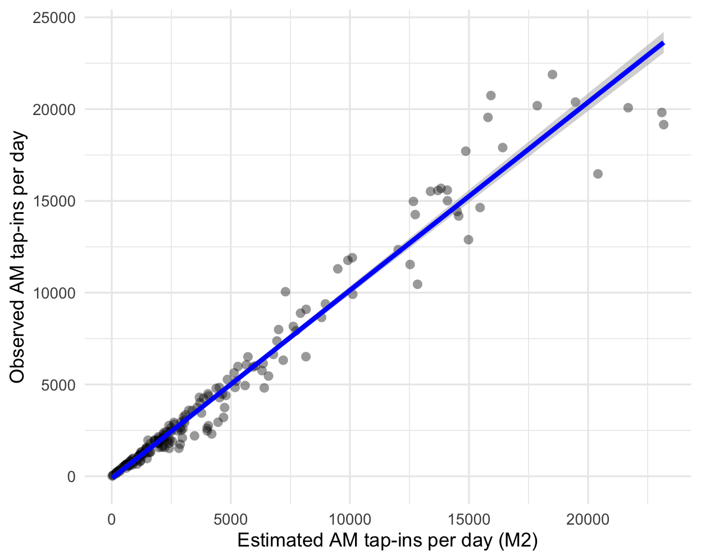
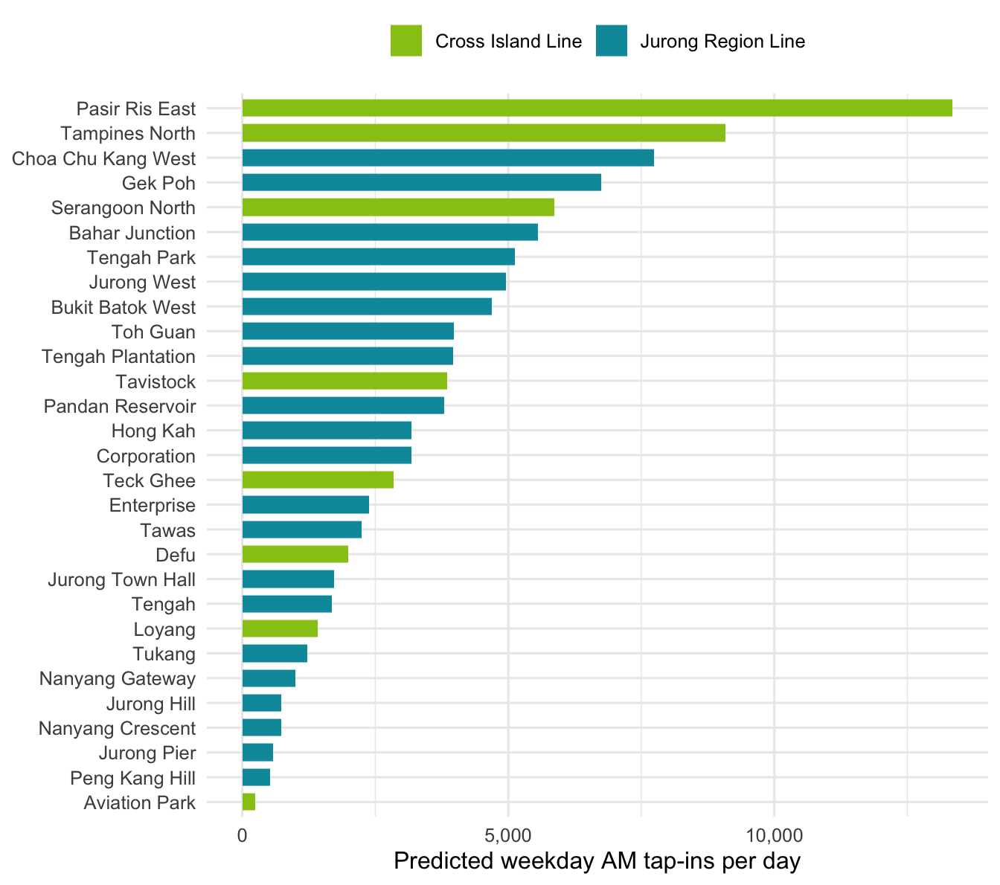
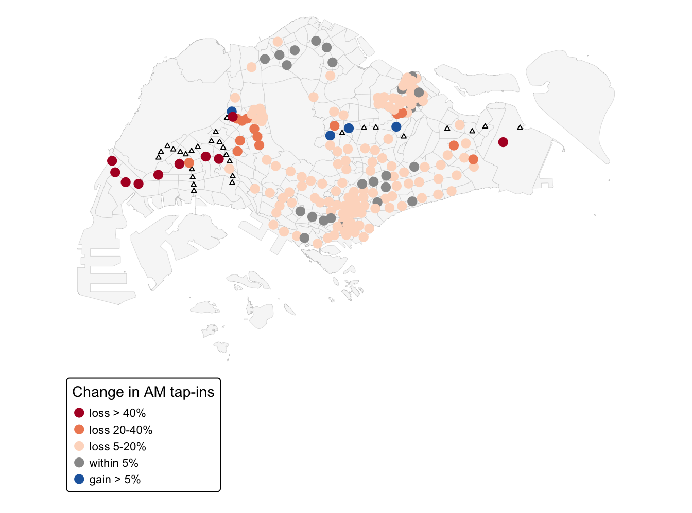
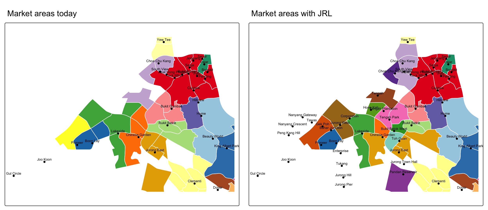
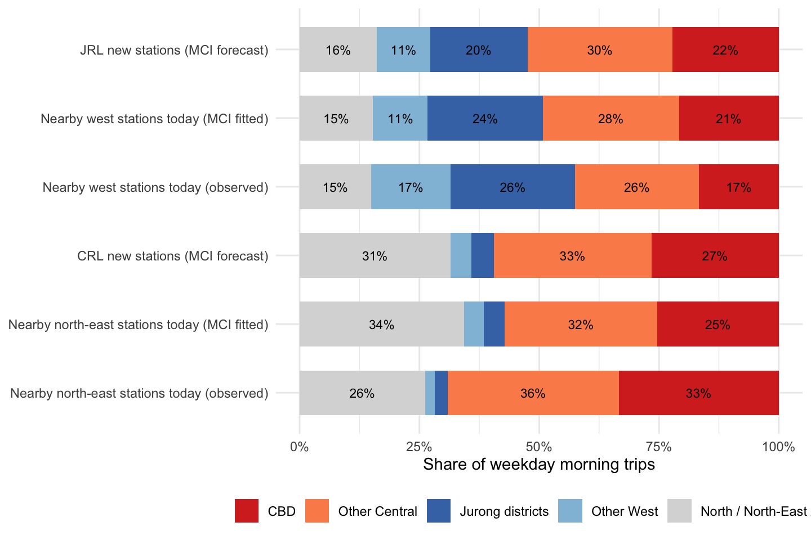

ISSS626 · Take-home Exercise 3 · Executive Summary
2026-10-31
36 new stations: JRL (24) and CRL Phase 1 (12)
863,723 weekday morning (06:00–09:59) tap-ins per day, Sep 2026
4,172,350 residents in 234 subzones
The problem
Stations built ahead of demand can sit empty for years: Buangkok, Woodleigh and Hume stayed closed because projected ridership was too low. Planners need to know how many riders a new station will attract, and from which existing stations they will come.
Research question
How many residents will start their morning trips at the proposed JRL and CRL stations, and how will these stations change the ridership and market areas of existing stations?
Data
| Dataset | Source |
|---|---|
| OD tap-ins by station, Sep 2026 | LTA DataMall API |
| Station polygons, codes, bus stops | LTA DataMall |
| Future station coordinates | URA Master Plan (GitHub) |
| Subzone boundaries (MP2019) | data.gov.sg (URA) |
| Population by subzone, 2025 | SingStat |
Clearing the land mines
| Step | Method (course reference) |
|---|---|
| Interaction data frames | 234 subzones × 184 stations (today), × 213 (future); st_distance() + pivot_longer() (Hands-on 8) |
| Huff model | \(p_{ij} = A_j d_{ij}^{\lambda} / \sum_k A_k d_{ik}^{\lambda}\); market = residents × morning trip rate (0.207) |
| Calibration | huff.shares() → huff.lambda() → huff.fit(); fit with model.fit() (Lesson 8) |
| Station attraction | Regression of log \(A_j^*\) on lines, bus stops, LRT, distance to CBD; diagnostics, Moran’s I, GWR (Hands-on 9) |
| Prediction | 75/25 train-test split; MLR vs gwr.predict() by RMSE (Hands-on 10) |
| Value-added | MCI destination choice with mci.fit() (Lesson 8) |

Model comparison
| Model | λ | Pseudo-R² | MAPE % |
|---|---|---|---|
| M0 | -2.00 | 0.41 | 294 |
| M1 | -2.34 | 0.43 | 251 |
| M2 | -2.34 | 0.96 | 15 |
Regression of log fitted attraction (R² = 0.52)
Predicting unseen stations (test set)
| Model | RMSE (log attraction) |
|---|---|
| Multiple linear regression | 0.771 |
| GWR | 0.758 |

65,752 JRL (21 new stations)
38,637 CRL (8 new stations)

Findings

About 12% of residents (488,810) get a new most likely station. In the west, Yunnan moves from Pioneer to Gek Poh, Boon Lay Place from Boon Lay to Jurong West, and Brickworks from Bukit Gombak to Tengah Park.

MCI destination choice
Limitations
Implications for planning and public safety
Huff and MCI models for MRT/LRT ridership · ← Back to Technical Report